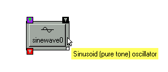

|
|
User Guide |
| User Guide | Transform Guide | OSW on the Web | |
Open Sound World, or OSW, is a development and run-time environment that allows sound designers and musicians to process sound in response to expressive real-time control. OSW employs a visual programming environment in which users instantiate and connect graphical components, called transforms to form programs, called patches. This model of “patching things together” has a long and storied history in computer music from early analog synths to modern programming environments such as Max/MSP, jMax and Pd. Users of these environments will probably find the OSW interface quite familiar, although there are several important differences. OSW uses a more uniform model where everything is a transform (i.e., no messages or constants floating around), connections between transforms are strongly typed, and only one connection may enter or leave a particular outlet. OSW is also highly dynamic and allows users to both edit transforms and manipulate performance controls simultaneously, and change patches or the basic configuration even while the audio is running.
To the left is a palette of “docked” transforms that you can use to build your programs (of course, there are many more transforms than these!). Taking up most of the screen are one or more patch views representing open patches. Each time you create or load a new patch, a new view is added.
Now let’s create a patch…
No programming document would be complete without first
showing you how to write a “Hello World” program. Click
on the blank transform button
and then move the mouse the place on an open patch view where you want to
place the new transform and click again to drop it. There will now be a blank
box on the patch window.
Type MessageBox
into the blank box
and either hit the Enter key or click outside the box.
This will create a new MessageBox transform.
Note that there is a transform on the dock that looks somewhat like this one. Indeed, MessageBoxes are used so often that that you can create them by clicking on the docked copy and then clicking on your patch. Do this to create a second MessageBox.
Now connect the first MessageBox to the second one. Click on the outlet of the first MessageBox to create a “wire”and drag it to left inlet of the other MessageBox. Click on the inlet to complete the process.
Now press the red button and watch your message travel through the wire!
Recall that we created a transform by typing a command
into a blank transform box. Try creating a sinewave transform by typing
Sinewave. This is a command that instantiates a new transform
whose class name is "Sinewave" and whose instance name is “sinewave0.”
There may be many transforms of the same class (e.g.,
lots of sinewave oscillators), but each transform will have a unique instance
name. OSW will automatically assign an instance name to a new transform, but
you can optionally specify a name for the transform by using the “-name”
option. To create a sinewave transform called “joe,” type
Sinewave –name joe instead.
“-name” is just one example of an option you can specify when instantiating a new transform. For example, if you wanted to specify an initial frequency of 256.1 Hz for your sinewave transform called “joe,” type the command Sinewave –name joe –freq 256.1. All transforms have the “-name” option, but most other options are specific to the transform class (refer the help page for a particular transform class to find out its options).
You might have noticed that OSW transforms often have
long names like “MessageBox” or “Sinewave” –
these are relatively short examples. Long descriptive names are easier to
remember and also help users understand the function of the transform, but they
also require more typing. Fortunately, OSW removes the need to type full
transform class names through a feature called transform completion
. For example,you could just type “Mess”
or “Sine followed by the Escape key to automatically complete the
class name:
If two or more transforms match what you typed, OSW
fills in the common letters and displays a list of all the matched transforms:
Transforms display “tool tip” messages that
describe their behavior. Leave the mouse over the body of a transform to
see a brief description of its function. You can also learn about inlets
and outlets of a transform this way.

Those who find tool tips more annoying than helpful
can turn them off in the Help menu. The same help information is also displayed
in the status bar at the bottom of the window.
You can get help on any transform by selecting it and using the F1 key. This will bring up a web document describing the inlets, outlets and options for a transform:
If it is available and OSW is running, a patch demonstrating the use of the transform will also be loaded.
Patches are to OSW as documents are to word processor: they are the things that you create, edit and store in files. We have already seen how you can build patches by instantiating and connecting transforms. You can save your patch by using the Save command in the File menu, or clicking the Save icon in the view for your patch. You can also Open and Close patches using the appropriate commands in the File menu or icons in a patch view.
Patches are themselves transforms, which can be included in other patches. To add a patch from a file, type the name of the patch into a blank transform. If the patch file is in another directory, you will need to specify an absolute or relative path to that directory (if you don’t know what an absolute or relative path is, check your OS documentation). You can also use the Patch transform to add a new subpatch that will be saved in the same file as the patch you’re working on.
OK, so now you can build, save and load patches. Unless you never make mistakes, you will probably want to make changes to your patches as you build them. OSW supports the standard Cut, Copy and Paste operations on transforms. To select a transform, click on its border. You can select multiple transforms by holding down the Shift key while you click on each transform’s border. Alternatively, you could draw a region around the transforms you want to select. For more fun with drawing regions, see the Gestural Commands section.
Once transforms are selected, you can use the Cut, Copy and Paste commands in the Edit menu. These operations work both within and between patches.
You can add comments and annotations to your patches using
the “Insert Annotation” command in the Edit menu or the Annotation icon
in the patch view. This command will add a new “sticky note” to your patch. You can then type in whatever comments you want.
In addition to traditional point-and-click editing, users can perform some common tasks by drawing gestures on the patch window. You might have already noticed that you can “draw” on the patch window by clicking and dragging the mouse. If you draw a figure around one or more transforms, it selects them for moving, cutting or copying:
Drawing a figure around an outlet creates a wire that you
can drag to an inlet (same as clicking on the outlet). Enclosing both an inlet and an outlet in a figure automatically connects them:
Editing-by-drawing might seem a bit odd at first, but it can really help speed up all that tedious moving and connecting of transforms. Future versions of OSW will likely expand this facility.
If you're the type who easily gets bored reading documents, you can jump right in to the Tutorial Patches, or explore the transforms available for your OSW projects.
Otherwise, you can read more about the details of OSW, including how to compose music and process audio signals.